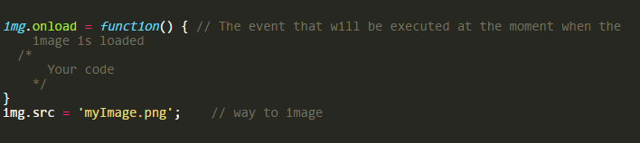

Line and arc
- beginPath()
- closePath()
- stroke()
- fill()
- moveTo(x, y)
- lineTo(x, y)
- arc(x, y, radius, startAngle, endAngle, anticlockwise)
Add color
- fillStyle = color // background color
- strokeStyle = color // line or border color
Set color like css
- ctx.fillStyle = "orange";
- ctx.fillStyle = "#FFA500";
- ctx.fillStyle = "rgb(255,165,0)";
- ctx.fillStyle = "rgba(255,165,0,1)"
drawImage(image, x, y)

Scale
drawImage(image, x, y, width, height) // parameters width, height change width and height
Draw a fragment of the image
drawImage(image, sx, sy, sWidth, sHeight, dx, dy, dWidth, dHeight);